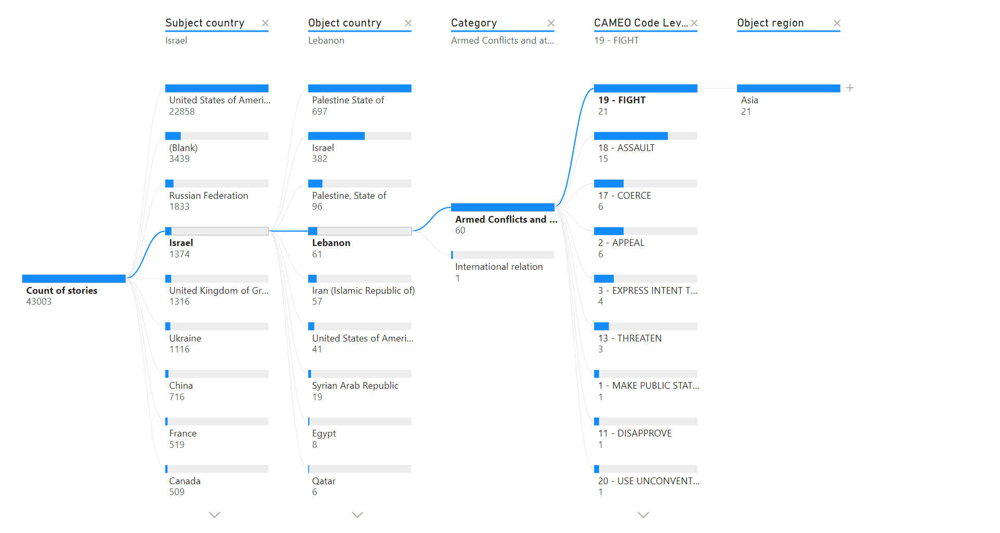

Decomposition Tree: Drill Down Into Event Data

The Decomposition Tree allows you to explore and break down data across multiple dimensions in Trender. It automatically aggregates event data and enables users to drill down into specific dimensions (like country, category, or subject) in any order they choose. This helps in uncovering deeper insights by navigating through complex datasets.
Filtering fields
This view can be filtred by all Data fields
Key Features
- Multi-Dimensional Analysis: Break down data by country, category, or subject.
- Customizable Drill Down: Drill down into data in any sequence to explore connections or anomalies.
- Aggregated Insights: Automatically aggregates data at each level, offering a hierarchical view.
Use Cases
- Event Type Breakdown: Explore how a single event type, like political news, is distributed across various regions or actors.
- Sentiment Analysis Drill Down: Investigate how sentiment varies between countries or actors in relation to specific events.
Example
If you are interested in understanding which countries have the highest number of health-related events in 2024, you can use the Decomposition Tree to first break down events by country, then by category (health), and finally by actor sentiment to see which countries have the most positive or negative health news.